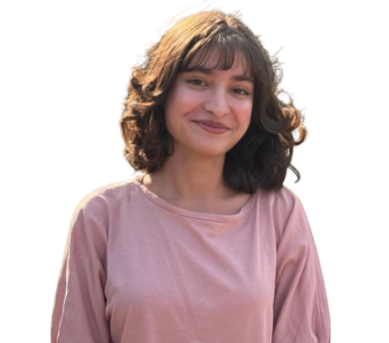

NUST · BS Data Science
Welcome to My Personal Portfolio
A simple student portfolio created for Web Engineering.

Gulwarina Muska Saleem
Age: 21
City: Islamabad, Pakistan
Degree: BS Data Science
Class: BS DS 2A
CMS ID: 520047
About Me
Hi, I'm Gulwarina Muska Saleem, a BS Data Science student from Islamabad, Pakistan. I enjoy exploring how data and technology can be used to understand the world around us, and I am currently working on building a strong foundation in programming and data analysis. Outside of my academic work, I like to spend my free time sketching and gardening, which give me a relaxing break from coursework and help me stay creative. I am still learning and growing, both as a student and as a person, and I am excited to share a bit more about myself through this website.
What You Can Find Here
Thank you for visiting my personal portfolio website. This site was created as part of my Web Engineering lab assignment to practice basic HTML and CSS. Feel free to look around and explore the different pages:
- Hobbies - a little about the things I enjoy doing in my free time
- Personal Skills - a simple overview of my technical and personal skills
- Image Gallery - a small collection of pictures related to my university, NUST
- Contact Me - ways to get in touch with me